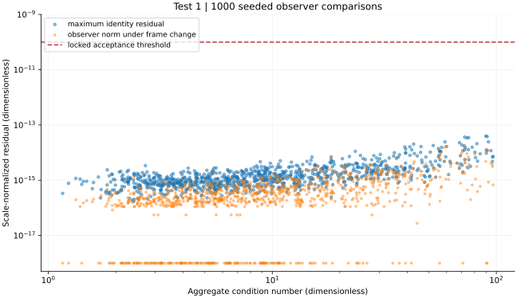
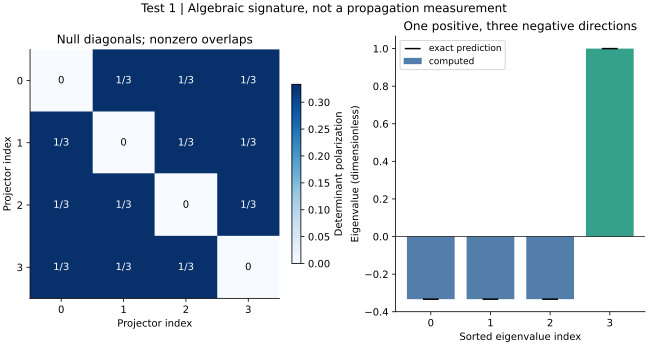
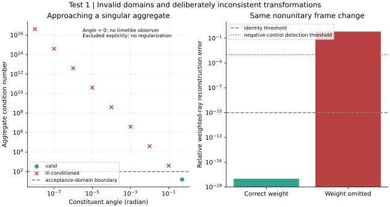

# Signal Space / GROSS Test 1 Classification: pass. Technical execution: completed. Question: are the operator and observer identities implemented consistently, including nonunitary frame changes? Measured: 1000 seeded samples; maximum scale-normalized residual 3.96312e-14; locked threshold 1e-10. Tetrahedral spectrum error: 4.44089e-16. Omitted-weight negative-control error: 0.632121. Method: saved complex 2x2 matrices and state vectors are audited using independent real Pauli components. Random Hermitian matrices and positive aggregates have condition number at most 100. SL(2,C) transformations combine SU(2) rotations with boosts of rapidity between -1 and 1. The exact rank-one aggregate has no normalized timelike observer. Near-collinear controls are reported separately, without clamping eigenvalues or inventing finite observer values. Error budget: floating-point algebra and conditioning; no fitted parameters, smoothing or stochastic confidence claim. Spatial boundary, conservation and timestep convergence are not applicable to this non-evolving matrix experiment. Limits: validates algebra/implementation only. No physical time, propagation, bound clock, Lorentz covariance of dynamics, or emergent spacetime is established. Next: Test 2 reciprocal event conservation and permissible rescheduling; Test 5 continuum action audit is an independent branch. Run: run-2ae9c65dbd171851 Analysis: analysis-0001-d3c876ea Solver commit: adbe7584dbd8b13b34432cbd88b5a6c8f7e39709 Config SHA-256: b40ef9c9fa4f0f03640acfe953270e3241c425f72438bcb5983112c33f01f21b Renderer commit: b99885fdc5967ebe7625d5efcbd5aa6c04830b92 ## operator-residuals Question: Do operator and observer identities remain accurate across the declared conditioning domain? Reading: Maximum residual 3.96e-14; compare all points with the locked 1e-10 line. Log plotting floors exact zeros at 1e-18. Significance: Tests consistent determinant, observer norm, positive form and weighted-ray transformations on saved inputs, with an independent component audit. Limitation: Finite moderate-conditioning samples; no propagation, clock or emergent metric is measured. ## tetrahedral-gram Question: Do four null projector directions span the predicted Lorentzian operator space? Reading: Each projector has a null diagonal. The sorted spectrum matches (-1/3,-1/3,-1/3,1) with maximum error 4.44e-16. Significance: Four null projector directions can span the four-dimensional Hermitian operator space with Lorentzian signature. Limitation: This is internal algebra. The tetrahedron supplies neither physical spatial axes nor a dynamical spacetime. ## observer-domain Question: Do singular aggregates and omitted ray weights expose the intended failure controls? Reading: Collinearity is rejected and ill-conditioned aggregates are marked separately. Omitting a boost-transformed weight gives error 0.632121. Significance: The test distinguishes valid observer construction from a singular ray, and detects inconsistent transformation of physical weights. Limitation: A domain rejection is not a physical instability. The deliberately broken control is not an alternative dynamics.


